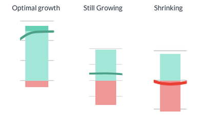

Growth Ceiling
Description:
The maximum MRR that the current customer flows can support.
It's the point where the MRR from incoming customers matches the
MRR lost with the churned customers.
Most importantly, at Growth Ceiling your current marketing spend is
required just to keep your SaaS from shrinking.
Use:
Growth Ceiling will help you estimate if your business model is profitable.
It will also help you to get a grasp of when your business growth will stop.
MRR growth will start to slow down when 70% - 80% of Growth Ceiling has been reached.
If Growth Ceiling is smaller than your current MRR, your business is shrinking towards the Growth Ceiling.
Factors affecting Growth Ceiling are visualized in
MRR Growth View:

Target:
In the growth phase, good growth ceiling is 2 times current MRR, or more.
Any growth ceiling that pleases the owners/investors is ok after the growth phase.
The best businesses have "Infinite" Growth Ceiling - meaning there is no ceiling. This happens when Net Churn is negative.
To Improve it:
Acquire more new customers & MRR. Raise prices. Improve retention. Reduce downgrades, increase upgrades.
Affects:
-
Formula:
New MRR / % Net Churn Rate
Variations:
( New Customers / % Churn Rate ) * ARPU
Also Called:
-